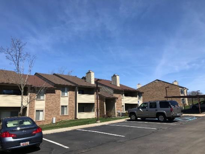

13. Courtyard
地址：1780 Broadway
主要房型：
1 Bedroom 1 Bathroom $1565
2 Bedrooms 2 Bathrooms $985
3 Bedrooms 3 Bathrooms $839
4 Bedrooms 4 Bathrooms $829
优点：靠近车站和食堂。步行至北校教学楼和图书馆约 10 分钟(也可坐 Blue Bus 一站地)。门口就有 AATA 公交车通往 kroger 和中国超市。内置家具无需自备。免供暖费。
缺点：房屋位置有内圈和外圈，内圈只能看到 courtyard，采光差，房内灯光暗。
网址：http://www.courtyardsapts.com/
推荐指数：四颗星
（图片来源：https://www.apartments.com）
14. Willowtree Apartment & Towers
地址：1819 Willowtree Lane
主要房型：
Studio $904-1009
1 Bedroom 1 Bathroom $929-$1019
2 Bedrooms 1 Bathroom $1108-$1358
优点：朝向好的话可以看到小湖，离 Kroger 和中国超市近，安静舒适。
缺点：离中校很远，没有Blue Bus, 但不远有AATA的车站可以到中校，持Mcard免费
注意:该小区所有 apartment(三层联排) 的房型费用都包含电费和气费。Tower(五层楼房)则需要另附。
网址：https://www.americancampus.com/student-apartments/mi/ann-arbor/willowtree-apartments-tower
推荐指数：三星半
（图片来源：https://www.americancampus.com）
15. Huron Towers
地址：2200 Fuller Ct.
主要房型：
Studio $910-$1000
1 Bedroom 1 Bathroom $1030-$1240
2 Bedrooms 1 Bathroom $1290-$1600
3 Bedrooms 1 Bathroom $1660-$2330
优点：环境安静，房间数量多,高层景色好，旁边有很大的足球场和森林公园,有游泳池。
缺点：离车站较远，价格偏高，房屋设施一般。
网址：http://www.hurontowers.com/index.html
推荐指数：三颗星
（图片来源：http://www.michiganmodern.org）
16. Parc Pointe Apartment
地址：1901 Pointe Ln.
主要房型：
Studio $910-$1000
1 Bedroom 1 Bathroom $Unknown
2 Bedroom 2 Bathroom $1520-1655
优点：每户内置洗衣机烘干机，树林环绕安静，停车免费。步行五分钟内有去中校和超市的 AATA 车站，步行至北校教学楼 15-20 分钟。
缺点：冬季供暖费用偏高(安娜堡普遍 2b2b 冬季每月可高达~$180)，面向树林的部分低楼层采光差、潮湿。
网址：http://www.hurontowers.com/index.html
推荐指数：三星半